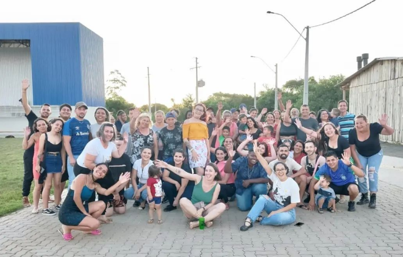
Confraternização das 8 cooperativas junto com a Apoena Socioambiental.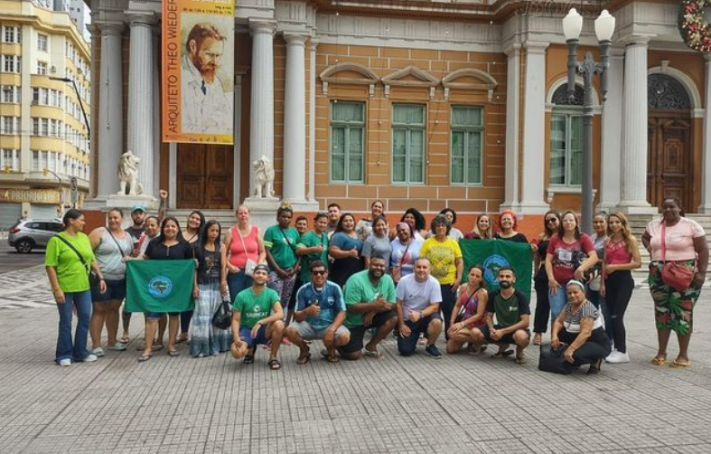
Viagem para São Paulo na Expo Catadores.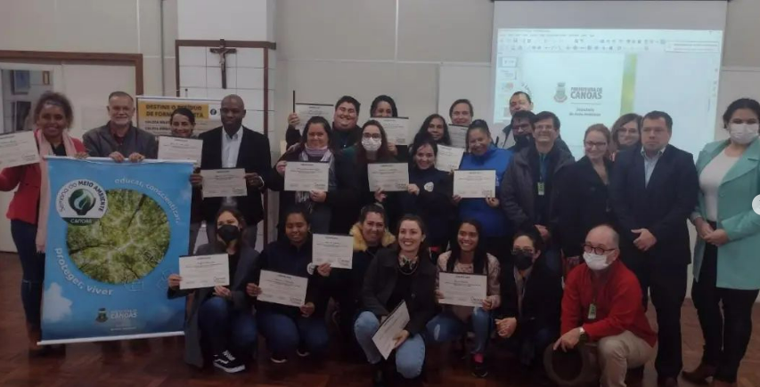
Seminário da Semana do Meio Ambiente.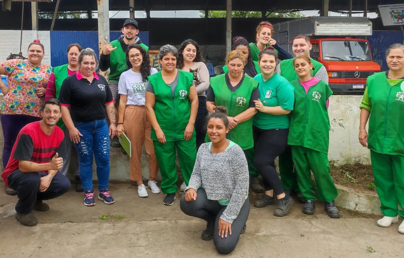
Visita das engenheiras ambientais da Apoena Socioambiental e Canoas Recicla com a Gente.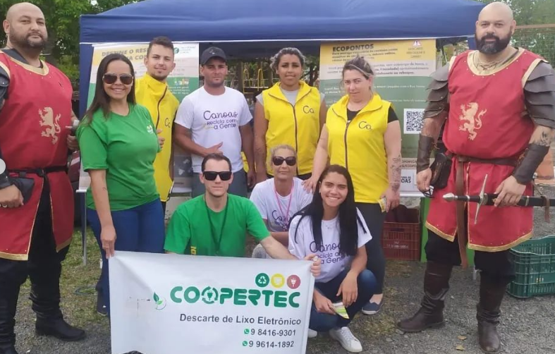
Feira mística de Canoas.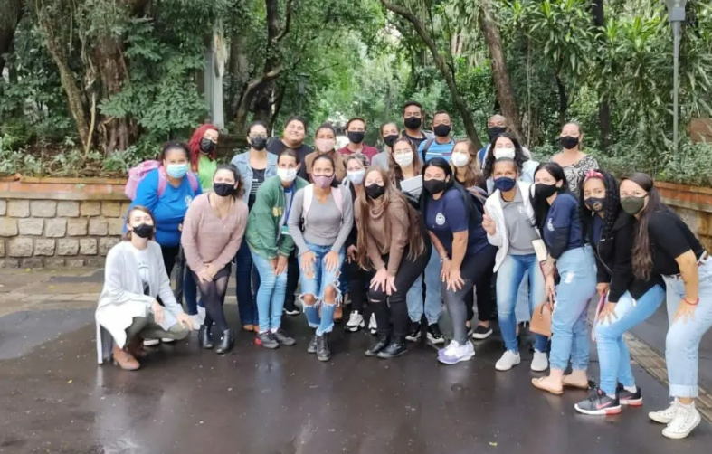
No Primeiro dia de formação dos Educadores Ambientais de Canoas com a Apoena Socioambiental.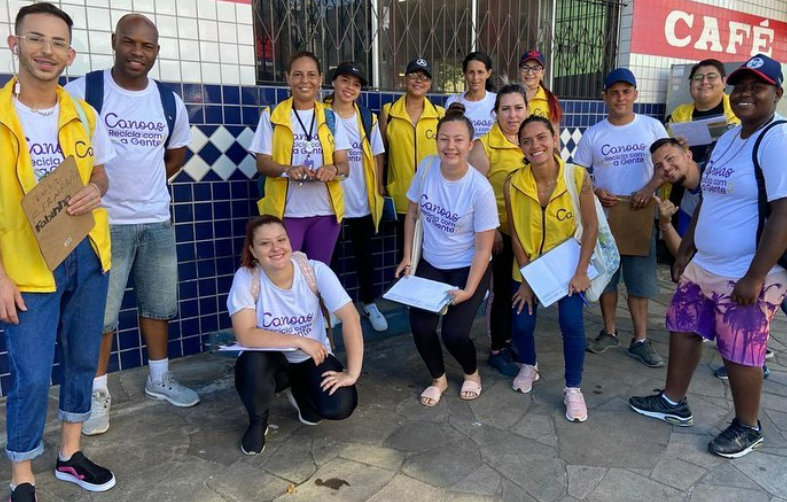
Porta a porta no Bairro Nossa Senhora das Graças.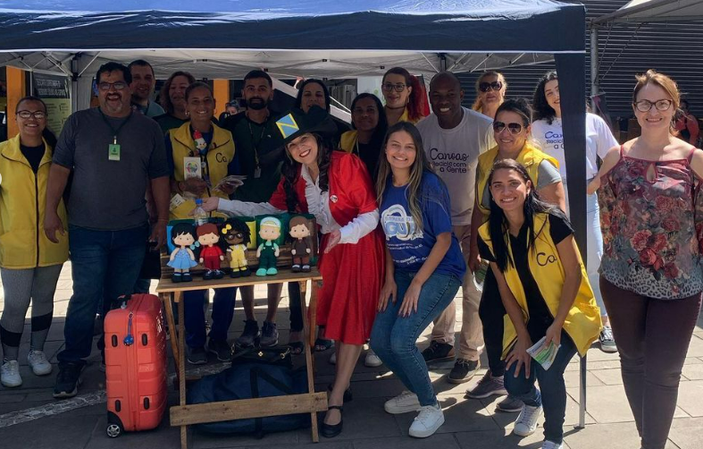
Divulgação do projeto Canoas Recicla com a Gente no calçadão.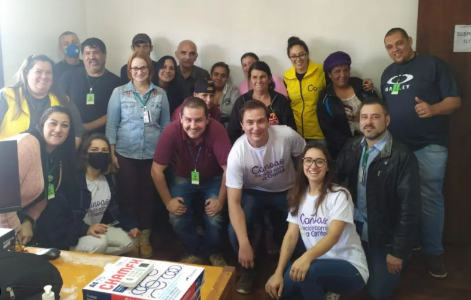
Capacitação do Projeto Canoas do Bem, junto com a secretária do Meio Ambiente, o Bem Estar Animal e os Educadores Ambientais das 8 cooperativas de Canoas.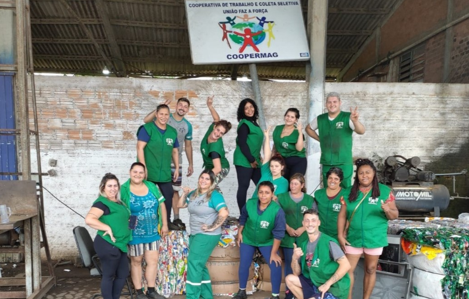
Time da COOPERMAG.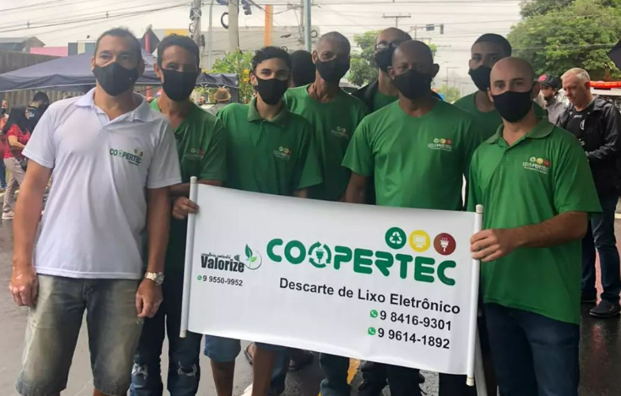
Prefeitura na rua com a participação de todas as cooperativas.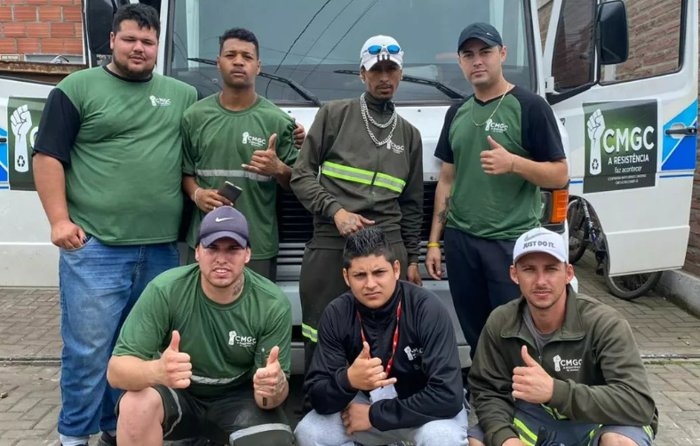
Equipe da coleta seletiva da Cooperativa Mato Grande Canoense.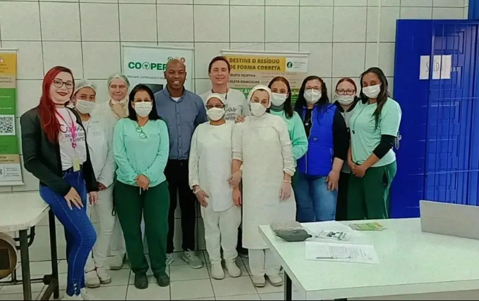
Palestra na EMEF Santos Dumont, em Niterói, sobre o projeto Canoas Recicla com a Gente em conjunto com a coleta seletiva e a Prefeitura de Canoas.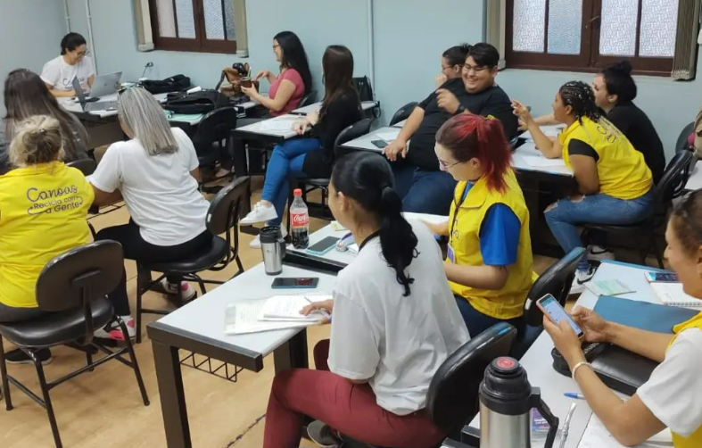
Formação na Universidade La Salle.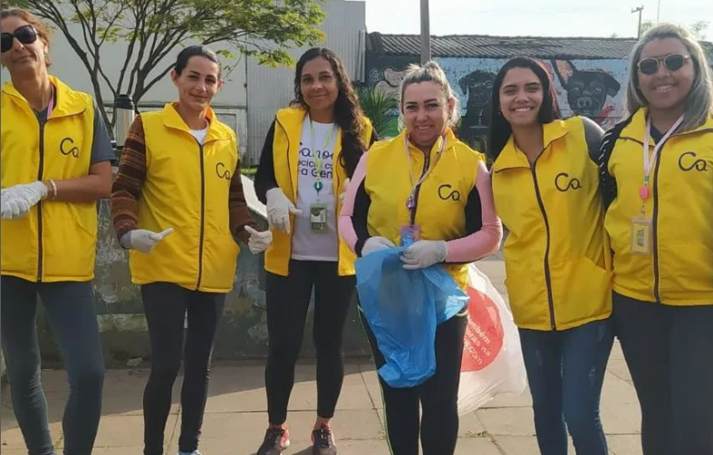
Trabalho de divulgação na Praça Cinco Colônias.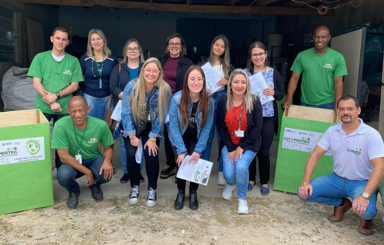
Visita das representantes do Consórcio Pró-Sinos na COOPERTEC.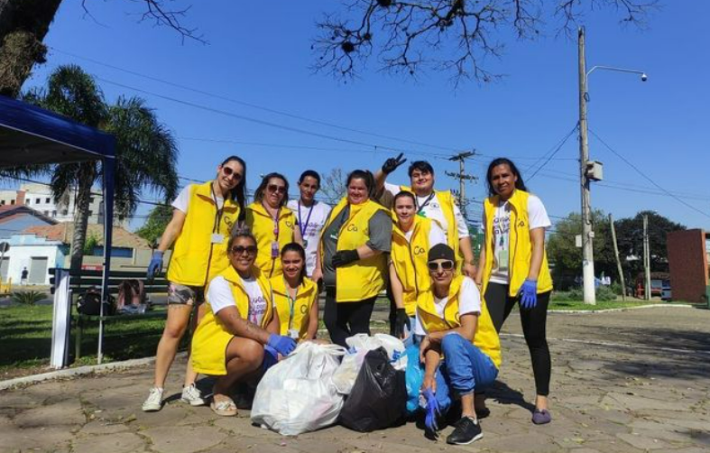
Ação na Praça Tiradentes no Bairro Rio Branco.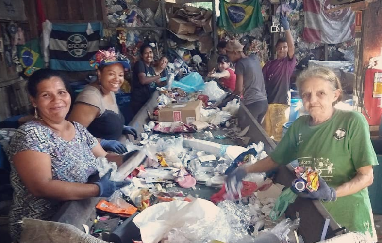
Time responsável pela esteira na Cooperativa Renascer.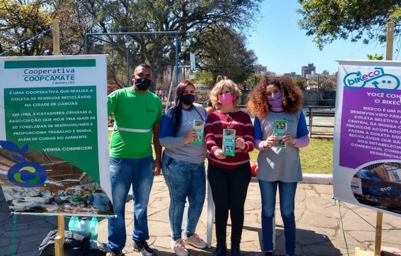
Equipe da COOPCAMATE no Prefeitura na Rua em Canoas.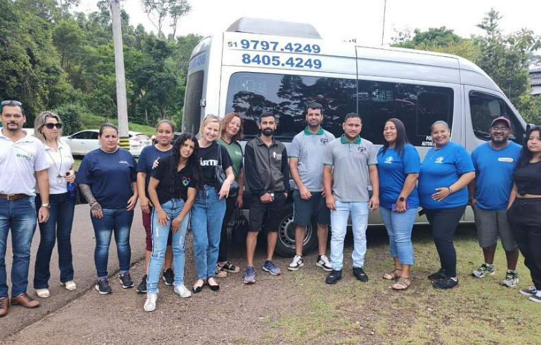
Visita na Cooperativa de reciclagem em Dois Irmãos.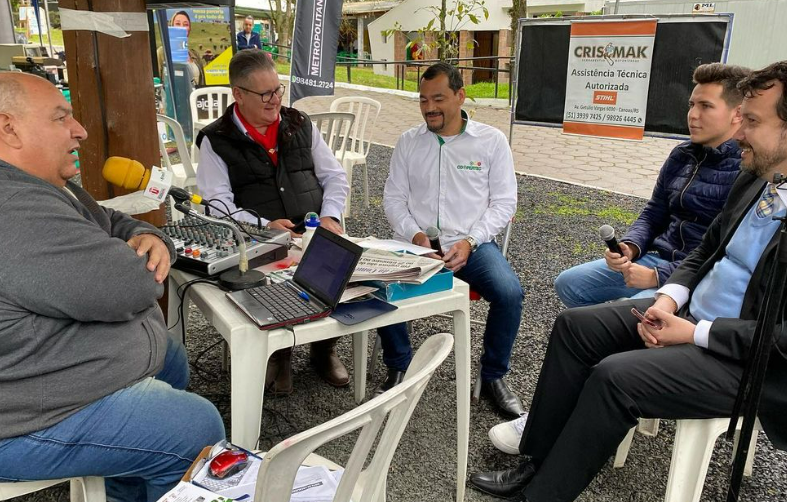
Entrevista da COOPERTEC para a Rádio Metropolitana junto com o governador do Estado, Ranolfo Júnior e o secretário-chefe da Casa Civil, Artur Lemos Junior.